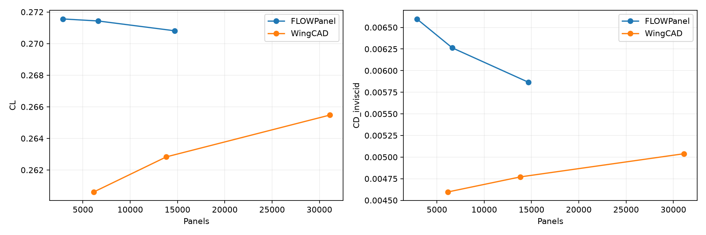
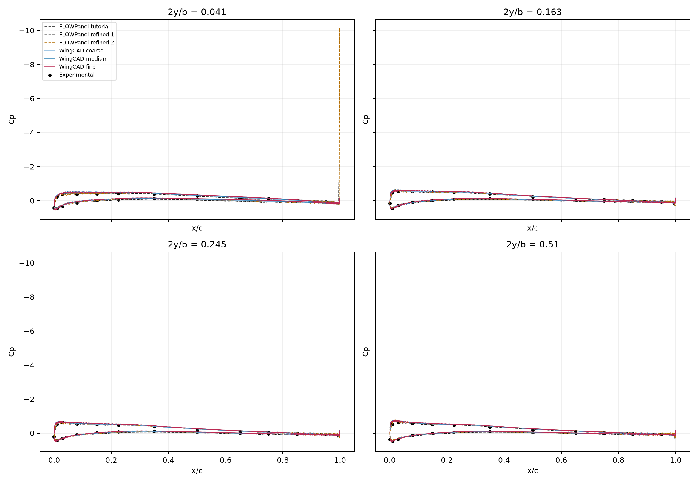
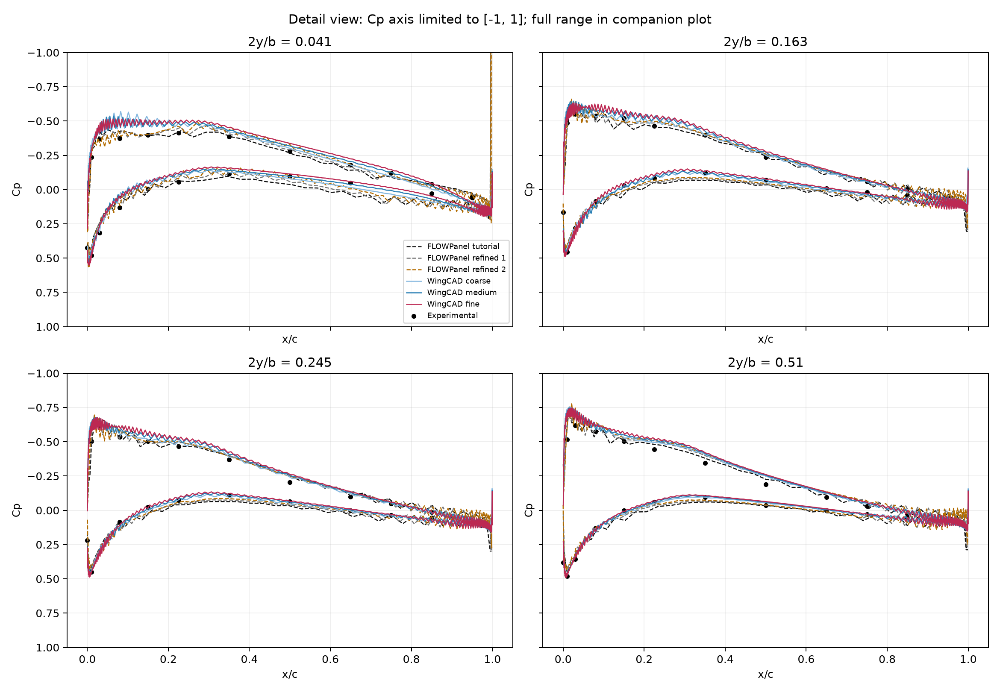
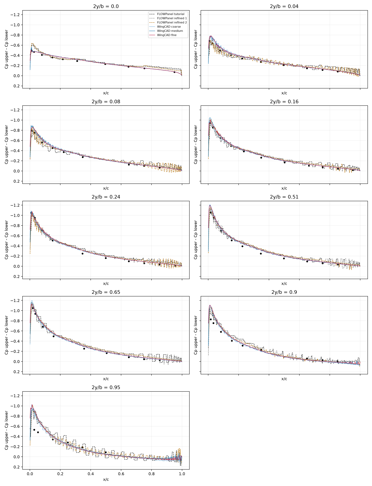
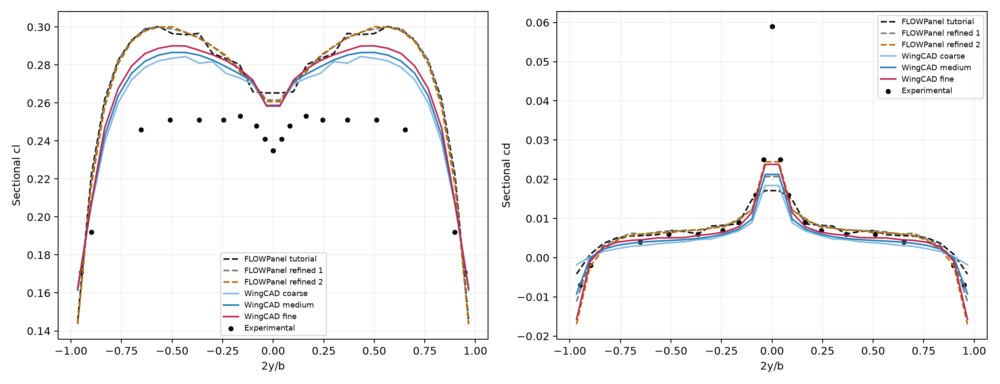

RAE101 · b=2,4892 m · c=0,49784 m · flecha 45° · 30 m/s · AoA 4,2° · 1,225 kg/m³ · S=1,239223328 m².
Comparación preliminar: sin convergencia demostrada. WingCAD conserva el método lineal de presión y sus mallas independientes. No se ajustaron nodos ni coeficientes a la referencia. Las diferencias porcentuales son respecto al tutorial de malla finita, no errores exactos.
| Caso | Paneles | CL | CD inviscido | ΔCL % | ΔCD % |
|---|---|---|---|---|---|
| FLOWPanel tutorial | 2880 | 0.2715608 | 0.006597903 | 0 | 0 |
| FLOWPanel refined 1 | 6624 | 0.2714313 | 0.006263255 | -0.04766558 | -5.072041 |
| FLOWPanel refined 2 | 14688 | 0.2708125 | 0.005864842 | -0.2755313 | -11.11052 |
| WingCAD coarse | 6144 | 0.2606091 | 0.004596435 | -4.032872 | -30.33492 |
| WingCAD medium | 13824 | 0.2628321 | 0.004770988 | -3.214251 | -27.68933 |
| WingCAD fine | 31104 | 0.2654764 | 0.005038759 | -2.240535 | -23.6309 |
Experimental del ejemplo: CL=0.238; CD=0.005. El CD experimental incluye efectos físicos que este modelo inviscido no representa.
Mismo perfil nominal, cuerda constante, sin torsión ni diedro, condiciones y normalización verificadas. Ambos usan puntas abiertas y estela rígida alineada con el flujo. WingCAD muestrea su BRep; FLOWPanel usa su representación del perfil. La referencia conserva dos semialas y su reconstrucción original; WingCAD comparte nodos en la raíz y usa vecinos reales para reconstruir la presión. Por ello la diferencia incluye discretización, representación geométrica y tratamiento numérico: no se atribuye sólo a la geometría.
| Anterior | Siguiente | Cambio CL % | Cambio CD % | Cp RMS | Cp p95 |
|---|---|---|---|---|---|
| FLOWPanel tutorial | FLOWPanel refined 1 | 0.0477 | 5.0720 | 0.0380 | 0.0803 |
| FLOWPanel refined 1 | FLOWPanel refined 2 | 0.2280 | 6.3611 | 0.0318 | 0.0764 |
| WingCAD coarse | WingCAD medium | 0.8530 | 3.7976 | 0.0204 | 0.0403 |
| WingCAD medium | WingCAD fine | 1.0061 | 5.6125 | 0.0176 | 0.0367 |
Los criterios WingCAD siguen siendo dos pares sucesivos con CL ≤1%, CD ≤5%, Cp RMS ≤0,02 y p95 ≤0,05 en el dominio interior. Las pequeñas variaciones integrales de referencia por sí solas no prueban convergencia local. Sus refinamientos son aproximadamente 1,5 por dirección, con redondeo entero.

Cortes en las estaciones del ejemplo; valores originales de panel. Las líneas unen muestras sin filtrado.

Vista ampliada con eje Cp limitado a [?1, 1], ?nicamente para leer las curvas. Los extremos permanecen en la figura anterior y los CSV.

Cp superior menos Cp inferior, evaluados en los mismos x/c con el valor constante del triángulo que contiene cada punto. La estación de raíz se evalúa en 2y/b=10⁻⁷. Sin suavizado ni recorte de extremos.

Integración conservativa por franjas comunes: cada panel aporta la fracción de área que intersecta la franja. Se comprueba que las fuerzas suman los coeficientes guardados.

coefficients.csv · delta_cp.csv · pressure_sections.csv · refinement.csv · spanwise_loading.csv · Configuraciones y hashes · Refinamiento separado de cuerda y envergadura